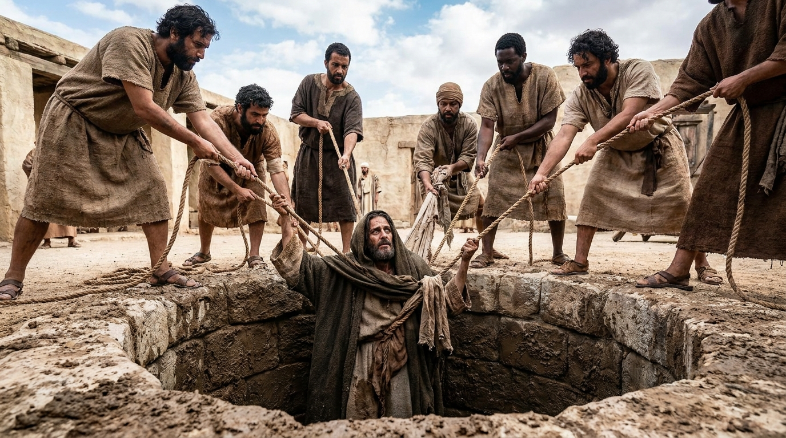

O Alerta do Exílio e a Nova Aliança
O livro de Jeremias é um relato intenso e emocionante. Durante 40 anos, Jeremias alertou Judá de que a persistência na idolatria e na injustiça traria o julgamento de Deus através do Império Babilônico. Sua mensagem foi rejeitada, e ele foi espancado, preso e jogado em uma cisterna. O livro acompanha a angústia do profeta ao ver suas profecias se cumprirem com a queda de Jerusalém, mas também brilha com a esperança inabalável da futura restauração e da instituição de uma Nova Aliança.
Ficha Técnica
- Autor: O profeta Jeremias (com a ajuda do seu escriba, Baruque).
- Tema Principal: O inevitável julgamento pelo pecado, o lamento pela nação e a promessa da Nova Aliança.
- Versículo-Chave: "'Estão chegando os dias', declara o Senhor, 'quando farei uma nova aliança com a comunidade de Israel e com a comunidade de Judá... Porei a minha lei no íntimo deles e a escreverei nos seus corações. Serei o Deus deles, e eles serão o meu povo.'" (Jeremias 31:31,33)
Estrutura
- O chamado de Jeremias e advertências a Judá (Caps. 1-25)
- Conflitos com falsos profetas e a promessa de restauração (Caps. 26-38)
- A queda de Jerusalém e os eventos subsequentes (Caps. 39-45)
- Profecias de julgamento sobre as nações vizinhas e Babilônia (Caps. 46-52)